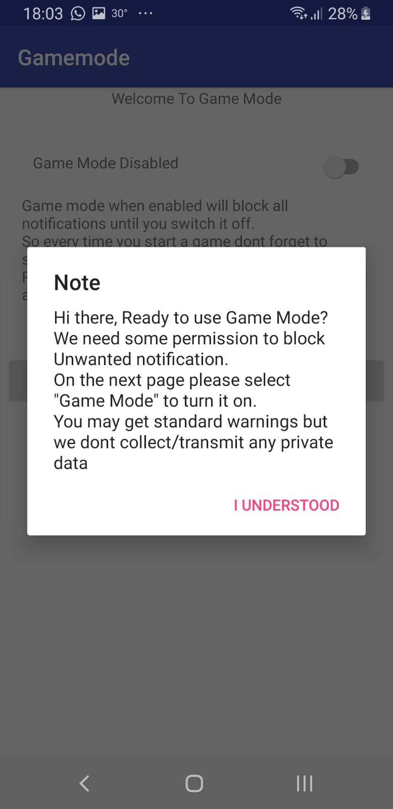
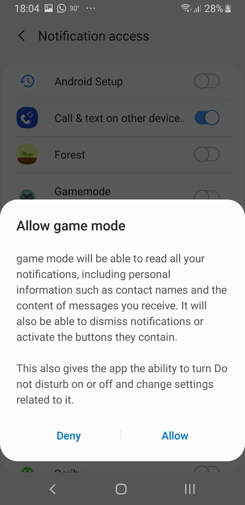

<!DOCTYPE html>
<html lang="en">
<head>
    <meta charset="UTF-8">
    <title>Metronom2</title>
<!--    comment jatos, init for jatos and all "save on finish" for run in github    -->
<!--    <script src="jatos.js"></script>-->
    <script src="jspsych-6.0.5/jspsych.js"></script>
    <script src="jspsych-6.1.0/plugins/jspsych-instructions.js"></script>
    <script src="jspsych-6.1.0/plugins/jspsych-external-html.js"></script>
    <script src="jspsych-6.1.0/plugins/jspsych-survey-html-form.js"></script>
    <script src="jspsych-6.0.5/plugins/jspsych-audio-button-response.js"></script>
    <script src="jspsych-6.0.5/plugins/jspsych-html-keyboard-response.js"></script>
    <script src="jspsych-6.0.5/plugins/jspsych-image-button-response.js"></script>
    <script src="jspsych-6.0.5/plugins/jspsych-survey-multi-choice.js"></script>
    <script src="jspsych-6.0.5/plugins/jspsych-survey-text.js"></script>
    <script src="jspsych-6.0.5/plugins/jspsych-html-button-response.js"></script>
    <script src="jspsych-6.0.5/plugins/jspsych-plugin-try.js"></script>
    <script src="jspsych-6.0.5/plugins/jspsych-function-tap.js"></script>
    <link href="jspsych-6.0.5/css/jspsych.css" rel="stylesheet" type="text/css"></link>
</head>
<style>
    .instruction{
        /*text-align: center;*/
        /*top: 10%;*/
        /*left: 20%;*/
        /*font-size: 4vw;*/
        font-size: 3em;
        /*max-width: 100%;*/
        margin-left: 10%;
        margin-right: 10%;
        line-height: 1.2em;
        /*text-align: left;*/
        /*font-weight: bold;*/
    }
    .responsive{
        /*width: 100%;*/
        max-height: 50em;
        /*max-height: 1111px;*/
        width: auto;
    }

    * {
        -ms-touch-action: manipulation;
        touch-action: manipulation;
    }
    a{font-size: 3em}
</style>
<body>
<script>

    /*****CONSTANTS****/
    TEMPOS_IN_MS = [200,341,583,997,1704];
    TIME_BEFORE_VIBRATE_IN_MS = 1000;  // a second
    VIBRATION_LENGTH = 70;
    NUM_STIMULI_TRIAL = 30;
    NUM_STIMULI_TRAIN = 5;
    // CONTRA_BALANCE = Math.round(Math.random()); // 0 auditory block is first, 1 tactile block is first
    CONTRA_BALANCE = 1;
    var tempo_start = 0;
    var tempo = 0;
    var train_succeed_in_row = 0;
    var train_num = 0;
    var one_correct = false;
    var exp_completed = 0;
    var natural_30_remind = false;
    string_trial = "<p class='instruction'>Continue tapping till you hear a break in the background noise</p>";
    AUDIO_PATH = "new_sounds/METRONOISE1sec/SOA_auditory_with_pink";
    TACTILE_PATH = "new_sounds/METRONOISE1sec/SOA_tactile_with_pink";
    AUDIO_TRAIN_PATH = "new_sounds/short_auditory_with_pink";
    TACTILE_TRAIN_PATH = "new_sounds/short_tactile_with_pink";
    TYPE = ".wav";
    audio = [];
    audio.push("new_sounds/sit_as_picture.wav");
    audio.push("new_sounds/tactile_with_silence1.wav");
    audio.push("new_sounds/tactile_with_silence3.wav");
    audio.push("new_sounds/tactile_with_silence5.wav");
    audio.push("new_sounds/auditory_with_pink3.wav");
    for(var i = 1; i<6; i++)
    {
        audio.push(AUDIO_PATH+i+TYPE);
        audio.push(TACTILE_PATH+i+TYPE);
        audio.push(AUDIO_TRAIN_PATH+i+TYPE);
        audio.push(TACTILE_TRAIN_PATH+i+TYPE);
    }
    images = [];
    images.push("images/volume_middle_horizontal.jpg");
    images.push("images/model.jpeg");
    images.push("images/1.jpeg");
    images.push("images/2.jpeg");
    images.push("images/3.jpeg");
    images.push("images/4.jpeg");
    images.push("images/6.jpeg");


    //-----saving data-----//
    // function saveData(name, data){
    //     var xhr = new XMLHttpRequest();
    //     xhr.open('POST', 'write_data.php'); // 'write_data.php' is the path to the php file described above.
    //     xhr.setRequestHeader('Content-Type', 'application/json');
    //     xhr.send(JSON.stringify({filename: name, filedata: data}));
    // }

    //*****instructions*****//

    // sample function that might be used to check if a subject has given
    // consent to participate.
    var check_consent = function(elem) {
        if (document.getElementById('consent_checkbox').checked) {
            return true;
        }
        else {
            alert("If you wish to participate, you must check the box next to the statement 'I read and understood the above'");
            return false;
        }
        return false;
    };


    var consent = {
        type:'external-html',
        url: "consent_form.html",
        cont_btn: "start",
        check_fn: check_consent
    };

    var prolific_id = {
        type:'survey-text',
        questions:[{prompt:"<p class='instruction'>Please enter your Prolific id</p>",rows: 3}],
        on_finish:function () {
            var data = jsPsych.data.getLastTrialData();
            var jsonData = data.json();
            jsonData = JSON.parse(jsonData);
            var responses = JSON.parse(jsonData[0].responses);
            jsPsych.data.addProperties({prolific_id:responses.Q0});
            save_on_finish();
        }
    };

    var app_instructions = {
        type: 'instructions',
        pages: [
            "<p class='instruction'>Please download 'Gamemode' app, to avoid getting notification during the experiment.<br><br> No private data is collected by the app</p><p class='instruction'>this is a mandatory step</p><p class='instruction' style='color: red'>Don't use do not disturb/silence mode </p> <a href=https://play.google.com/store/apps/details?id=com.blocknotification.gamemode>Gamemode download</a><br>",
            '<p class="instruction">Here is how to activate the app: </p>',
            '',
            '',
            '',
            ''
        ],
        show_clickable_nav: true
    };

    var first_instructions = {
        type: 'instructions',
        pages: [
            '<h1>Hello and welcome to our experiment</h1><p class="instruction">Please follow the instructions carefully.<br><br>' +
    'This experiment is approx.20 min long.<br><br>' +
    'This experiment is to be completed to the end with no breaks.<br><br>' +
    'When you are ready to proceed, press “Next”</p>',
            '<p class="instruction">Please take a few seconds to close any applications that may be running in the background</p>',
            '<p class="instruction">The experiment will last approx.20 min, please make sure you are sitting comfortably.</p>',
            '<p class="instruction">Please make sure you are sitting in a quiet area with no disturbances</p>',
            '<p class="instruction">Please remove your phone’s protective case<br>(if you have one)</p>',
            '<p class="instruction">Please hold your phone in your <u>non</u>-dominant hand. It is recommended that you extend your arm.</p><p class="instruction"> You can support your ' +
                    'elbow on an arm rest or place your hand on a soft surface or a pillow.<br>Please do not switch hands for the duration of the experiment</p>',
            '<p class="instruction">Please connect a set of headphones / earphones.<br> Make sure they are sitting comfortably in both ears.</p>',
            '<p class="instruction">Please make sure your phone is NOT on "silent","vibrate-only" or "do not disturb" mode.<br>Please leave the sound ON</p>',
            '<p class="instruction">Please set your phone’s volume to the middle of the sound bar </p>'
        ],
        show_clickable_nav: true,
        on_start: function () {
            jsPsych.data.addProperties({exp_start:Date.now()});
        }
    };


    // var test_stimuli = [
    //     {stimulus: '<h1>Hello and welcome to our experiment</h1><p class="instruction">Please follow the instructions carefully ' +
    //             'This experiment is approx.20 min long. ' +
    //             'This experiment is to be completed to the end with no breaks.\n' +
    //             'When you are ready to proceed, press “continue”</p>'},
    //     {stimulus: '<p class="instruction">Please take a few seconds to close any applications that may be running in the background</p>'},
    //     {stimulus: '<p class="instruction">The experiment will last approx.20 min, please make sure you are sitting comfortably.</p>'},
    //     {stimulus: '<p class="instruction">Please make sure you are sitting in a quiet area with no disturbances</p>'},
    //     {stimulus: '<p class="instruction">Please remove your phone’s protective case (if you have one)</p>'},
    //     {stimulus: '<p class="instruction">Please hold your phone in your non-dominant hand. It is recommended that you extend your arm.</p><p class="instruction"> You can support your ' +
    //             'elbow on an arm rest or place your hand on a soft surface.\n Please do not switch hands for the duration of the experiment</p>'},
    //     {stimulus: '<p class="instruction">Please connect a set of headphones/earphones and make sure they are sitting comfortably in both ears</p>'},
    //     {stimulus: '<p class="instruction">Please make sure your phone is on sound (NOT on silent mode\\vibrate-only\\’do not disturb’)</p>'},
    //     {stimulus: '<p class="instruction">Please set your phone’s volume to the middle of the sound bar </p>'},
    // ];
    // var instruction = {
    //     type: "html-button-response",
    //     stimulus: jsPsych.timelineVariable('stimulus'),
    //     choices: ['continue']
    // };
    // var instruction_procedure = {
    //     timeline: [instruction],
    //     timeline_variables: test_stimuli,
    //     on_start: function () {
    //         jsPsych.data.addProperties({exp_start:Date.now()});
    //     }
    // };


    var volume_configuration_instruction = {
        type: 'html-button-response',
        stimulus: "<h3>Volume Adjustment</h3><p class='instruction'>During the experiment there will be background noise. Let's adjust the volume to a level that will be comfortable" +
            "for you. Please adjust your volume to the center of your sound bar" +
            "</p><br>",
        choices: ['continue'],
    };

    var volume_configuration = {
      type: 'audio-button-response',
      stimulus: 'new_sounds/auditory_with_pink3.wav',
      choices: ['OK'],
      prompt: "<p class='instruction'>Raise or lower your volume to a level that is comfortable for you.<br>The sound should be clearly audible" +
          "<br>When the volume is adjusted to a comfortable level, press 'OK'</p>"
    };

    var check_check_box = function(elem) {
        var check1 = document.getElementById('check1');
        var check2 = document.getElementById('check2');
        var check3 = document.getElementById('check3');
        var check4 = document.getElementById('check4');
        var check4 = document.getElementById('check5');
        if (check1.checked && check2.checked && check3.checked && check4.checked && check5.checked) {
            return true;
        }
        else {
            alert("Please follow all the instructions and check the boxes");
            // alert("If you wish to participate, you must check the box next to the statement 'I read and understood the above'");
            return false;
        }
        return false;
    };

    var form_trial = {
        type:'external-html',
        url: "check_box_instruction.html",
        cont_btn: "Continue",
        check_fn: check_check_box
    };

    var start_train_instruction = {
      type: 'html-button-response',
      stimulus: '<p class="instruction"><strong>Great!</strong></p><p class="instruction">We will now begin with a short practice run and then move on to the' +
          ' experiment</p>',
        choices: ['continue']
    };

    var tactile_train_exp_instruction = {
      type: 'html-button-response',
        stimulus:'<p class="instruction">You will feel a beat.<br><br>Start tapping at the tempo of the beat immediately when the beat\n' +
            'starts.<br><br>When the beat stops – continue tapping, at the tempo you just felt<br><br>Stop tapping only when you hear a break in the background noise</p>',
        choices:['continue']
    };

    var audio_train_exp_instruction = {
        type: 'html-button-response',
        stimulus:'<p class="instruction">You will hear a beat.<br><br>Start tapping at the tempo of the beat immediately when the beat\n' +
            'starts.<br><br>When the beat stops – continue tapping, at the tempo you just heard<br><br>Stop tapping only when you hear a break in the background noise</p>',
        choices:['continue']
    };

    var end_train_instruction = {
        type: 'html-button-response',
        stimulus: '<p class="instruction" style="font-weight: bold">End of practice run</p><p class="instruction">The experiment will begin immediately. Your assignment will be the same, but you will not ' +
            'receive feedback during the experiment.</p><p class="instruction">To begin the experiment, press “Continue”</p><br>',
        choices: ['continue'],
        on_finish: function () {
            save_on_finish();
        }
    };

    var exp_to_form = {
      type: "html-button-response",
      stimulus: '<h1>We are almost done!</h1><br><p class=\'instruction\'>Please fill out a brief form next</p>',
        choices: ['To the form'],
        on_finish: function () {
            save_on_finish();
        }
    };

    var between_blocks_to_tactile = {
      type: "html-button-response",
      stimulus: '<p class="instruction"><strong>Good job!</strong></p><p class="instruction">you finished half of the experiment</p><p class=\'instruction\'>now you will be<strong>feeling</strong> a tempo' +
          ' instead of hearing it</p>',
      choices: ['continue'],
        on_finish: function () {
            save_on_finish();
      }
    };

    var between_blocks_to_auditory = {
        type: "html-button-response",
        stimulus: '<p class=\'instruction\'><strong>Good job!</strong></p><p class=\'instruction\'>you finished half of the experiment</p><p class=\'instruction\'>now you will be<strong>hearing</strong> a tempo' +
            ' instead of feeling it</p>',
        choices: ['continue'],
        on_finish: function () {
            save_on_finish();
        }
    };

    var first_narration = {
      type: 'audio-button-response',
      stimulus: 'new_sounds/sit_as_picture.wav',
      choices: ['OK'],
      prompt: '<br>'
    };

    var finished = {
        type: 'html-button-response',
        stimulus: "<p class='instruction' style='font-size: 4em'><strong>Congratulations!</strong></p><p class='instruction'><br> You have finished the experiment</p><p class='instruction'>Please copy this completion code to the prolific: 8405137D</p><p class='instruction'>Thank you</p><br><br><p class='instruction' style='font-size: 2em'>*Don't forget to turn off the 'Gamemode' application</p>",
        choices: '',
		on_finish: function(){
			exp_completed = 1;
            jsPsych.data.addProperties({First_to_run:CONTRA_BALANCE,exp_end:Date.now(),exp_completed:exp_completed});
            // saveData(subject_id, jsPsych.data.get().csv());
            save_on_finish();
		}
    };
    /////////////////////////////////////////

    //---------adjusting and checking----------//
    var third_tempo_583_train_6_vibes = {
        type: 'function-tap',
        stimulus: 'new_sounds/tactile_with_silence3.wav',
        choices: [],
        prompt: "<p class='instruction'>Count the number of vibrations you feel </p>",
        trial_duration: 4600+500,
        on_start: function () {
            navigator.vibrate([1,TIME_BEFORE_VIBRATE_IN_MS,70,517,70,517,70,517,70,517,70,517,70,517]);
        }
    };
    var second_tempo_341_train_9_vibes = {
        type: 'function-tap',
        stimulus: 'new_sounds/tactile_with_silence2.wav',
        choices: [],
        prompt: "<p class='instruction'>Count the number of vibrations you feel </p>",
        trial_duration: 4096+500,
        on_start: function () {
            navigator.vibrate([1,TIME_BEFORE_VIBRATE_IN_MS,70,130,70,130,70,130,70,130,70,130,70,130,70,130,70,130,70,130]);
        }
    };
    var fifth_tempo_1704_train_4_vibes = {
        type: 'function-tap',
        stimulus: 'new_sounds/tactile_with_silence5.wav',
        choices: [],
        prompt: "<p class='instruction'>Count the number of vibrations you feel </p>",
        trial_duration: 7000+500,
        on_start: function () {
            navigator.vibrate([1,TIME_BEFORE_VIBRATE_IN_MS,70,1634,70,1634,70,1634,70,1634]);
        }
    };
    var check_train = {
        type: 'html-button-response',
        stimulus: "<p class='instruction'>How many vibrations did you feel?</p>",
        choices: ['0','1', '2','3','4','5','6','7','8','9','10'],
        button_html: '<button class="jspsych-btn" style="padding: 1.2em">%choice%</button>',
        prompt: "",
        margin_horizontal: "2rem",
        margin_vertical: "2rem"
    };

    var loop_node = {
        timeline: [third_tempo_583_train_6_vibes,check_train],
        loop_function: function(){
            var data = jsPsych.data.getLastTrialData();
            var jsonData = data.json();
            jsonData = JSON.parse(jsonData);
            var responses = JSON.parse(jsonData[0].button_pressed);
            if(responses===0)
            {
                alert("please make sure your phone is not muted")
            }
            if(responses !== 6)
            {
                alert("it is not the correct answer, please try again")
            }else
            {
                alert("correct!");
            }
            return responses!==6;
        }
    };
    // var loop_node2 = {
    //     timeline: [loop_node,second_tempo_341_train_9_vibes,check_train],
    //     loop_function: function(data){
    //         var data = jsPsych.data.getLastTrialData();
    //         var jsonData = data.json();
    //         jsonData = JSON.parse(jsonData);
    //         var responses = JSON.parse(jsonData[0].button_pressed);
    //         if(responses===0)
    //         {
    //             alert("please make sure your phone is not muted")
    //         }
    //         if(responses !== 9)
    //         {
    //             alert("it is not the correct answer, please try again")
    //         }else
    //         {
    //             alert("correct!");
    //         }
    //         return responses!==9;
    //     }
    // };
    var loop_node3 = {
        timeline: [loop_node,fifth_tempo_1704_train_4_vibes,check_train],
        loop_function: function(data){
            var data = jsPsych.data.getLastTrialData();
            var jsonData = data.json();
            jsonData = JSON.parse(jsonData);
            var responses = JSON.parse(jsonData[0].button_pressed);
            if(responses===0)
            {
                alert("please make sure your phone is not muted")
            }
            if(responses !== 4)
            {
                alert("it is not the correct answer, please try again")
            }else
            {
                alert("correct!");
            }
            return responses!==4;
        }
    };
    //////////////////////////////////////////////
    //----------------------------------------//
    var natural_rythom_instruction = {
      type: 'html-button-response',
      stimulus: '<p class="instruction">We will now ask you to tap with your index finger at a comfortable tempo, and to keep the tempo <b>constant</b>.</p><p class="instruction">you will tap for 1 minute.</p>',
        choices: ['Ready?']
    };
    var natural_rythom = {
        type: 'function-tap',
        stimulus: 'new_sounds/tactile_with_silence5.wav',
        choices: ['Tap<br>Here'],
        trial_duration: 60000,
        on_finish: function () {
            save_on_finish();
        }
    };

    var natural_30_check = {
        timeline: [natural_rythom],
        loop_function: function () {
            var time_stamps = read_time_stamps_from_data();
            var array_stamps = create_array_stamps(time_stamps);
            if((array_stamps.length < 30)&&(!natural_30_remind)){
                alert("Let’s try again!\n" +
                    "\n" +
                    "Tap at the screen at a constant tempo\n" +
                    "Choose a tempo that is comfortable for you\n" +
                    "Keep tapping until the screen will change.\n" +
                    "You will tap for 1 minute");
                natural_30_remind = true;
                return true;
            }
            else {
                return false;
            }
        }
    };

    var natural_finish = {
        type: 'html-button-response',
        stimulus: '<p class="instruction"> Great job!<br><br> Now we will move on to the next stage',
        choices: ['Continue']
    };
    ///////////////////////////////////////////////
    //---------training---------//

    function create_array_stamps(time_stamps) {
        //parsing from string to array of floats
        var array_stamps = [];
        if(time_stamps === "")
        {
            array_stamps.push(tempo_start+3000); //try tapping earlier - if no tap
            // alert("yap");
        }
        var idx = time_stamps.indexOf(",");
        while (idx !== -1)
        {
            // alert(time_stamps.substring(0,idx));
            array_stamps.push(parseFloat(time_stamps.substring(0 , idx)));
            time_stamps = time_stamps.substring(idx+1);
            idx = time_stamps.indexOf(",");
        }
        return array_stamps;
    }

    function read_time_stamps_from_data(data) {
        var data = jsPsych.data.getLastTrialData();
        var jsonData = data.json();
        jsonData = JSON.parse(jsonData);
        var time_stamps = jsonData[0].time_stamps;
        return time_stamps;
    }

    function check_train_loop(first_stamp,num_of_taps) {
        train_num++;
        if(Math.abs(first_stamp-tempo_start) > 1500+(tempo*2))  //not early enough
        {
            alert("Please try to start tapping earlier in the trial");
        }
        else if(num_of_taps < 20)  //not enough taps
        {
            alert("Please try to match the beat");
        }
        else
        {
            alert("Excellent!");
            one_correct = true;
        }
        if(train_num === 5)
        {
            alert("We are sorry, as it seems you're not compatible with our experiment. We thank you for your participation");
            jatos.abortStudy("We are sorry, as it seems you're not compatible with our experiment. We thank you for your participation");
        }
        if(one_correct)
        {
            one_correct = false;
            train_num = 0;
            return false;
        }
        return true;
    }

    /////////////////////////////////////////

    //*******tactile block********//
    function create_vibration_tempo_arrays() {
        tempos_arrays = [];
        for(var i=0; i<TEMPOS_IN_MS.length; i++)
        {
            tempo_array = [];
            tempo_array.push(1);
            tempo_array.push(TIME_BEFORE_VIBRATE_IN_MS);
            for(var j=0; j<NUM_STIMULI_TRIAL; j++)
            {
                tempo_array.push(VIBRATION_LENGTH);
                tempo_array.push(TEMPOS_IN_MS[i]-VIBRATION_LENGTH);
            }
            tempos_arrays.push(tempo_array);
        }
    }
    create_vibration_tempo_arrays();

    var first_tempo_200_pink = {
        type: 'function-tap',
        on_start: function () {
            var event = new Event('build');
            tempo_start = event.timeStamp;
            vibration_200_start = event.timeStamp;
            tempo = 200;
            navigator.vibrate(tempos_arrays[0]);
        },
        // new_sounds/METRONOISE1sec/SOA_tactile_with_pink1.wav
        stimulus: '',
        choices: ['Tap<br>Here'],
        // post_trial_gap: 1000,
        prompt: string_trial,
        trial_duration: 200,
        // trial_ends_after_audio: true,
        data: {modality:'1',practice:'0',trial_tempo:'200'},
    };

    var second_tempo_341 = {
        type: 'function-tap',
        // new_sounds/METRONOISE1sec/SOA_tactile_with_pink2.wav
        stimulus: '',
        choices: ['Tap<br>Here'],
        // post_trial_gap: 1000,
        prompt: string_trial,
        trial_duration: 200,
        // trial_ends_after_audio:true,
        data: {modality:'1',practice:'0',trial_tempo:'341'},
        on_start: function () {
            var event = new Event('build');
            tempo_start = event.timeStamp;
            vibration_341_start = event.timeStamp;
            tempo = 341;
            navigator.vibrate(tempos_arrays[1]);
        }
    };

    var third_tempo_583 = {
        type: 'function-tap',
        // new_sounds/METRONOISE1sec/SOA_tactile_with_pink3.wav
        stimulus: '',
        choices: ['Tap<br>Here'],
        post_trial_gap: 1000,
        // prompt: string_trial,
        trial_duration: 200,
        // trial_ends_after_audio:true,
        data: {modality:'1',practice:'0',trial_tempo:'583'},
        on_start: function () {
            var event = new Event('build');
            tempo_start = event.timeStamp;
            vibration_583_start = event.timeStamp;
            tempo = 583;
            navigator.vibrate(tempos_arrays[2]);
        }
    };

    var forth_tempo_997 = {
        type: 'function-tap',
        // new_sounds/METRONOISE1sec/SOA_tactile_with_pink4.wav
        stimulus: '',
        choices: ['Tap<br>Here'],
        // post_trial_gap: 1000,
        prompt: string_trial,
        trial_duration: 2000,
        // trial_ends_after_audio:true,
        data: {modality:'1',practice:'0',trial_tempo:'997'},
        on_start: function () {
            var event = new Event('build');
            tempo_start = event.timeStamp;
            vibration_997_start = event.timeStamp;
            tempo = 997;
            navigator.vibrate(tempos_arrays[3]);
        }
    };

    var fifth_tempo_1704 = {
        type: 'function-tap',
        // new_sounds/METRONOISE1sec/SOA_tactile_with_pink5.wav
        stimulus: '',
        choices: ['Tap<br>Here'],
        // post_trial_gap: 1000,
        prompt: string_trial,
        trial_duration: 2000,
        // trial_ends_after_audio:true,
        data: {modality:'1',practice:'0',trial_tempo:'1704'},
        on_start: function () {
            var event = new Event('build');
            tempo_start = event.timeStamp;
            vibration_1704_start = event.timeStamp;
            tempo = 1704;
            navigator.vibrate(tempos_arrays[4]);
        }
    };

    // all_types_tactile = [first_tempo_200_pink];
    all_types_tactile = [first_tempo_200_pink,second_tempo_341,third_tempo_583,forth_tempo_997,fifth_tempo_1704];
    // tactile_block = jsPsych.randomization.repeat(all_types_tactile,1);
    tactile_block_1 = jsPsych.randomization.repeat(all_types_tactile,1);  //for now change to 1
    tactile_block_2 = jsPsych.randomization.repeat(all_types_tactile,1);  //for now change to 1
    // tactile_block_3 = jsPsych.randomization.repeat(all_types_tactile,1);  //for now change to 1
    // tactile_block_4 = jsPsych.randomization.repeat(all_types_tactile,1);  //for now change to 1
    //
    tactile_block = [];
    tactile_block.push(tactile_block_1);
    tactile_block.push(tactile_block_2);
    // tactile_block.push(tactile_block_3);
    // tactile_block.push(tactile_block_4);
    tactile_block = tactile_block.flat();
    ////////////////////////////////////////////////////////////

    //*******auditory block********//
    var first_auditory_200_pink = {
        type: 'function-tap',
        stimulus: 'new_sounds/METRONOISE1sec/SOA_auditory_with_pink1.wav',
        choices: ['Tap<br>Here'],
        // post_trial_gap: 1000,
        data: {modality:'0',practice:'0',trial_tempo:'200'},
        prompt: string_trial,
        trial_ends_after_audio: true,
        on_start:function () {
            var event = new Event('build');
            tempo_start = event.timeStamp;
            tempo = 200;
        }
    };

    var second_auditory_341 = {
        type: 'function-tap',
        stimulus: 'new_sounds/METRONOISE1sec/SOA_auditory_with_pink2.wav',
        choices: ['Tap<br>Here'],
        // post_trial_gap: 1000,
        data: {modality:'0',practice:'0',trial_tempo:'341'},
        prompt: string_trial,
        trial_ends_after_audio: true,
        on_start:function () {
            var event = new Event('build');
            tempo_start = event.timeStamp;
            tempo = 341;
        }
    };

    var third_auditory_583 = {
        type: 'function-tap',
        stimulus: 'new_sounds/METRONOISE1sec/SOA_auditory_with_pink3.wav',
        choices: ['Tap<br>Here'],
        // post_trial_gap: 1000,
        data: {modality:'0',practice:'0',trial_tempo:'583'},
        prompt: string_trial,
        trial_ends_after_audio: true,
        on_start: function () {
            var event = new Event('build');
            tempo_start = event.timeStamp;
            tempo = 583;
        }
    };

    var forth_auditory_997 = {
        type: 'function-tap',
        stimulus: 'new_sounds/METRONOISE1sec/SOA_auditory_with_pink4.wav',
        choices: ['Tap<br>Here'],
        // post_trial_gap: 1000,
        data: {modality:'0',practice:'0',trial_tempo:'997'},
        prompt: string_trial,
        trial_ends_after_audio: true,
        on_start: function () {
            var event = new Event('build');
            tempo_start = event.timeStamp;
            tempo = 997;
        }
    };

    var fifth_auditory_1704 = {
        type: 'function-tap',
        stimulus: 'new_sounds/METRONOISE1sec/SOA_auditory_with_pink5.wav',
        choices: ['Tap<br>Here'],
        // post_trial_gap: 1000,
        data: {modality:'0',practice:'0',trial_tempo:'1704'},
        prompt: string_trial,
        trial_ends_after_audio: true,
        on_start: function () {
            var event = new Event('build');
            tempo_start = event.timeStamp;
            tempo = 1704;
        }
    };

    // all_types_auditory = [first_auditory_200_pink];
    all_types_auditory = [first_auditory_200_pink,second_auditory_341,third_auditory_583,forth_auditory_997,fifth_auditory_1704];
    // auditory_block = jsPsych.randomization.repeat(all_types_auditory,1);  //for now change to 1
    auditory_block_1 = jsPsych.randomization.repeat(all_types_auditory,1);  //for now change to 1
    auditory_block_2 = jsPsych.randomization.repeat(all_types_auditory,1);  //for now change to 1
    // auditory_block_3 = jsPsych.randomization.repeat(all_types_auditory,1);  //for now change to 1
    // auditory_block_4 = jsPsych.randomization.repeat(all_types_auditory,1);  //for now change to 1
    auditory_block = [];
    auditory_block.push(auditory_block_1);
    auditory_block.push(auditory_block_2);
    // auditory_block.push(auditory_block_3);
    // auditory_block.push(auditory_block_4);
    auditory_block = auditory_block.flat();
    /////////////////////////////////////////////////////////////////////////////////////////////

    //--------------------loop training---------------------//
    ///---------train blocks-----------///
    var second_tempo_341_train = {
        type: 'function-tap',
        stimulus: 'new_sounds/short_tactile_with_pink2.wav',
        choices: ['Tap<br>Here'],
        prompt: string_trial,
        trial_ends_after_audio:true,
        data: {modality:'1',practice:'1',trial_tempo:'341'},
        on_start: function () {
            var event = new Event('build');
            tempo_start = event.timeStamp;
            vibration_341_start = event.timeStamp;
            tempo = 341;
            navigator.vibrate(tempos_arrays[1].slice(0,31));
        }
    };

    var third_tempo_583_train = {
        type: 'function-tap',
        stimulus: 'new_sounds/short_tactile_with_pink3.wav',
        choices: ['Tap<br>Here'],
        prompt: string_trial,
        trial_ends_after_audio:true,
        data: {modality:'1',practice:'1',trial_tempo:'583'},
        on_start: function () {
            var event = new Event('build');
            tempo_start = event.timeStamp;
            vibration_583_start = event.timeStamp;
            tempo = 583;
            // alert(tempos_arrays[3].slice(0,31));
            navigator.vibrate(tempos_arrays[2].slice(0,31));
        }
    };

    var forth_tempo_997_train = {
        type: 'function-tap',
        stimulus: 'new_sounds/short_tactile_with_pink4.wav',
        choices: ['Tap<br>Here'],
        prompt: string_trial,
        trial_ends_after_audio:true,
        data: {modality:'1',practice:'1',trial_tempo:'997'},
        on_start: function () {
            var event = new Event('build');
            tempo_start = event.timeStamp;
            vibration_997_start = event.timeStamp;
            tempo = 997;
            navigator.vibrate(tempos_arrays[3].slice(0,31));
        }
    };
    var second_auditory_341_train = {
        type: 'function-tap',
        stimulus: 'new_sounds/short_auditory_with_pink2.wav',
        choices: ['Tap<br>Here'],
        data: {modality:'0',practice:'1',trial_tempo:'341'},
        prompt: string_trial,
        trial_ends_after_audio: true,
        on_start:function () {
            var event = new Event('build');
            tempo_start = event.timeStamp;
            tempo = 341;
        }
    };

    var third_auditory_583_train = {
        type: 'function-tap',
        stimulus: 'new_sounds/short_auditory_with_pink3.wav',
        choices: ['Tap<br>Here'],
        data: {modality:'0',practice:'1',trial_tempo:'583'},
        prompt: string_trial,
        trial_ends_after_audio: true,
        on_start: function () {
            var event = new Event('build');
            tempo_start = event.timeStamp;
            tempo = 583;
        }
    };

    var forth_auditory_997_train = {
        type: 'function-tap',
        stimulus: 'new_sounds/short_auditory_with_pink4.wav',
        choices: ['Tap<br>Here'],
        data: {modality:'0',practice:'1',trial_tempo:'997'},
        prompt: string_trial,
        trial_ends_after_audio: true,
        on_start: function () {
            var event = new Event('build');
            tempo_start = event.timeStamp;
            tempo = 997;
        }
    };

    //////////////////////////
    var loop_train_341_tactile = {
        timeline: [second_tempo_341_train],
        loop_function: function (data) {
            var time_stamps = read_time_stamps_from_data();
            var array_stamps = create_array_stamps(time_stamps);
            return check_train_loop(array_stamps[0],array_stamps.length);
        },
        on_start: function () {
            train_num = 0;
            one_correct = false;
            train_succeed_in_row = 0;
        }
    };
    var loop_train_583_tactile = {
        timeline: [third_tempo_583_train],
        loop_function: function (data) {
            var time_stamps = read_time_stamps_from_data();
            var array_stamps = create_array_stamps(time_stamps);
            return check_train_loop(array_stamps[0],array_stamps.length);
        },
        on_start: function () {
            train_num = 0;
            one_correct = false;
            train_succeed_in_row = 0;
        }
    };
    var loop_train_997_tactile = {
        timeline: [forth_tempo_997_train],
        loop_function: function (data) {
            var time_stamps = read_time_stamps_from_data();
            var array_stamps = create_array_stamps(time_stamps);
            return check_train_loop(array_stamps[0],array_stamps.length);
        },
        on_start: function () {
            train_num = 0;
            one_correct = false;
            train_succeed_in_row = 0;
        }
    };

    var loop_train_341_auditory = {
        timeline: [second_auditory_341_train],
        loop_function: function (data) {
            var time_stamps = read_time_stamps_from_data();
            var array_stamps = create_array_stamps(time_stamps);
            return check_train_loop(array_stamps[0],array_stamps.length);
        },
        on_start: function () {
            train_num = 0;
            one_correct = false;
            train_succeed_in_row = 0;
        }
    };
    var loop_train_583_auditory = {
        timeline: [third_auditory_583_train],
        loop_function: function (data) {
            var time_stamps = read_time_stamps_from_data();
            var array_stamps = create_array_stamps(time_stamps);
            return check_train_loop(array_stamps[0],array_stamps.length);
        },
        on_start: function () {
            train_num = 0;
            one_correct = false;
            train_succeed_in_row = 0;
        }
    };
    var loop_train_997_auditory = {
        timeline: [forth_auditory_997_train],
        loop_function: function (data) {
            var time_stamps = read_time_stamps_from_data();
            var array_stamps = create_array_stamps(time_stamps);
            return check_train_loop(array_stamps[0],array_stamps.length);
        },
        on_start: function () {
            train_num = 0;
            one_correct = false;
            train_succeed_in_row = 0;
        }
    };


    // all_types_auditory_train = [loop_train_200_auditory];
    all_types_auditory_train = [loop_train_341_auditory,loop_train_997_auditory];
    auditory_block_train = jsPsych.randomization.repeat(all_types_auditory_train,1);
    function push_auditory_train() {
        timeline.push(loop_train_583_auditory);
        for(var i = 0; i < auditory_block_train.length; i++)
        {
            timeline.push(auditory_block_train[i]);
        }
    }

    // all_types_tactile_train = [loop_train_200_auditory];
    all_types_tactile_train = [loop_train_341_tactile,loop_train_997_tactile];
    tactile_block_train = jsPsych.randomization.repeat(all_types_tactile_train,1);
    function push_tactile_train() {
        timeline.push(loop_train_583_tactile);
        for(var i = 0; i < tactile_block_train.length; i++)
        {
            timeline.push(tactile_block_train[i]);
        }
    }
    ///////////////////////////////////

    //-----------Questions----------//
    var free_text_Qs = {
        type: 'survey-text',
        questions: [
            {prompt: "What phone model did you use?"},
            {prompt: "What headphone/earphone model did you use?"},
            {prompt: "Age: "},
            {prompt: "Sex: "},
            {prompt: "Do you have any experience with musical instruments? How many years?"},
            {prompt: "Which instrument?"},
            {prompt: "Do you have any prior experience using metronomes?"},
            {prompt: "Did you receive any notifications during this last stretch?"},
            {prompt: "Were there any other problems during the experiment that you would like to report?",rows:5,columns:40}
        ],
        on_finish:function () {
            var data = jsPsych.data.getLastTrialData();
            var jsonData = data.json();
            jsonData = JSON.parse(jsonData);
            var responses = JSON.parse(jsonData[0].responses);
            jsPsych.data.addProperties({phone_model:responses.Q0,headphone_model:responses.Q1,age:responses.Q2,sex:responses.Q3,
            musical_experience:responses.Q4,instruments:responses.Q5,metronomes_experience:responses.Q6,notification:responses.Q7,
            problems:responses.Q8});
            // saveData(subject_id, jsPsych.data.get().csv());
            exp_completed = 1;
            save_on_finish();
        }
    };

    var bluetooth_check = {
        type: 'survey-multi-choice',
        questions: [{prompt: "Did you use headphones connected by wire (not bluetooth) or wireless (bluetooth)?",
            options: ["wire","wireless"]}],
        on_finish: function () {
            var data = jsPsych.data.getLastTrialData();
            var jsonData = data.json();
            jsonData = JSON.parse(jsonData);
            var responses = JSON.parse(jsonData[0].responses);
            jsPsych.data.addProperties({bluetooth:responses.Q0});
            // saveData(subject_id, jsPsych.data.get().csv());
            save_on_finish();
        }
    };
    var yes_no_options = ["Yes", "No"];
    var dominant_hand_options = ["right", "left", "other"];

    var multi_choice_block = {
        type: 'survey-multi-choice',
        questions: [
            {prompt: "Did you switch to other applications during the experiment?", options: yes_no_options},
            {prompt: "Does your phone have a screen protector?", options: yes_no_options},
            {prompt: "Dominant hand: ", options: dominant_hand_options},
            {prompt: "Have you been diagnosed with ADHD?",options: yes_no_options}
        ],
        on_finish: function () {
            var data = jsPsych.data.getLastTrialData();
            var jsonData = data.json();
            jsonData = JSON.parse(jsonData);
            var responses = JSON.parse(jsonData[0].responses);
            jsPsych.data.addProperties({switch_application:responses.Q0,screen_protector:responses.Q1,dominant_hand:responses.Q2,adhd:responses.Q3});
            // saveData(subject_id, jsPsych.data.get().csv());
            save_on_finish();
        }
    };
    //////////////////////////////////////////////////////////////

    function push_auditory() {
        //push auditory block
        for(var i = 0; i<auditory_block.length; i++)
        {
            timeline.push(auditory_block[i]);
        }
    }

    function push_tactile() {
        //push tactile block
        for(var i = 0; i<tactile_block.length; i++)
        {
            timeline.push(tactile_block[i]);
        }
    }

    // ----------------- Create random subject ID: ----------------- //
    const subject_id = Math.floor(Math.random() * 9999999) + 1;
    jsPsych.data.addProperties({subject_id: subject_id});

    //get the time
    var date = new Date();
    month = date.getMonth()+1;
    day = date.getDate();
    hour = date.getHours();
    minutes = date.getMinutes();
    seconds = date.getSeconds();
    full_time = day.toString()+"/"+month.toString()+" ; "+hour.toString()+":"+minutes.toString()+":"+seconds.toString();
    jsPsych.data.addProperties({date:full_time});


    ///-------------------time line-------------------///
    var timeline = [];
    // timeline.push(consent);
    // timeline.push(prolific_id);
    // timeline.push(app_instructions);
    // timeline.push(first_instructions);
    // timeline.push(natural_rythom_instruction);
    // timeline.push(natural_30_check);
    // timeline.push(natural_finish);
    /// // //קריינות
    // timeline.push(first_narration);
    // timeline.push(loop_node3);
    // timeline.push(volume_configuration_instruction);
    // timeline.push(volume_configuration);
    // timeline.push(form_trial);
    if(CONTRA_BALANCE === 0)
    {
        // timeline.push(start_train_instruction);
        // timeline.push(audio_train_exp_instruction);
        // push_auditory_train();
        timeline.push(end_train_instruction);
        push_auditory();
        timeline.push(between_blocks_to_tactile);
        // timeline.push(start_train_instruction);
        // timeline.push(tactile_train_exp_instruction);
        // push_tactile_train();
        timeline.push(end_train_instruction);
        push_tactile();
    }
    else {
        // timeline.push(start_train_instruction);
        // timeline.push(tactile_train_exp_instruction);
        // push_tactile_train();
        timeline.push(end_train_instruction);
        push_tactile();
        timeline.push(between_blocks_to_auditory);
        // timeline.push(start_train_instruction);
        // timeline.push(audio_train_exp_instruction);
        // push_auditory_train();
        timeline.push(end_train_instruction);
        push_auditory();
    }
    // timeline.push(exp_to_form);
    // timeline.push(bluetooth_check);
    // timeline.push(multi_choice_block);
    // timeline.push(free_text_Qs);
    timeline.push(finished);

    ///----------------------init----------------------///

    function save_on_finish()
    {
        // jsPsych.data.addProperties({First_to_run:CONTRA_BALANCE,exp_end:Date.now(),exp_completed:exp_completed});
        // var resultJson = jsPsych.data.get().json();
        // jatos.submitResultData(resultJson);
    }

    // init for JATOS
    // jatos.onLoad(function() {
    //     jsPsych.init({
    //         timeline: timeline,
    //         preload_audio: audio,
    //         preload_images: images,
    //         on_finish: function () {
    //             exp_complited = 1;
    //             save_on_finish();
    //             jsPsych.endExperiment();
    //         }
    //     });
    // });

    // init for github(w/o saving)
    jsPsych.init({
        timeline: timeline,
        preload_audio: audio,
        preload_images: images,
        on_finish: function () {
            exp_completed = 1;
            jsPsych.data.addProperties({First_to_run:CONTRA_BALANCE,exp_end:Date.now(),exp_completed:exp_completed});
            // saveData(subject_id, jsPsych.data.get().csv());
        }
    });

</script>
</body>
</html>